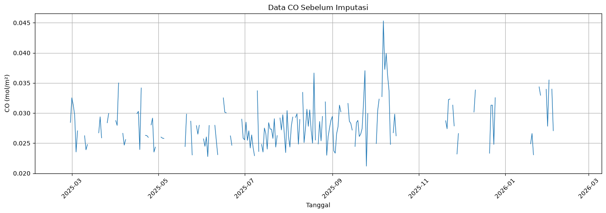
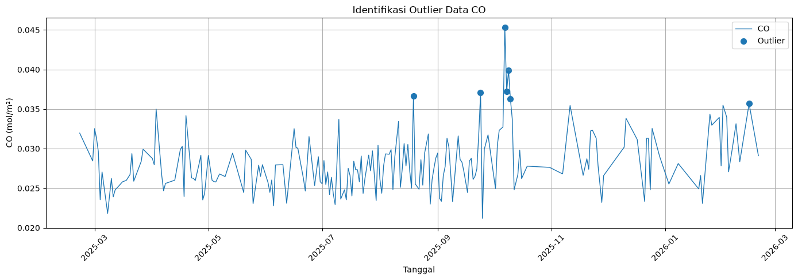

import importlib.metadata
try:
tsfel_version = importlib.metadata.version("tsfel")
print(f"TSFEL tersedia: {tsfel_version}")
except importlib.metadata.PackageNotFoundError:
raise RuntimeError(
"TSFEL belum terpasang pada kernel ini. Pasang dengan: %pip install tsfel, lalu restart kernel sekali."
)
TSFEL tersedia: 0.2.0
Tugas 3 - Preprocessing Data dan Ekstraksi Fitur TSFEL#
Studi kasus: Analisis konsentrasi Carbon Monoxide (CO)
Wilayah pengamatan: Kecamatan Klampis, Kabupaten Bangkalan
Sumber data: Sentinel-5P
Notebook ini mengubah data pengamatan CO yang belum lengkap menjadi deret waktu harian selama 365 hari, kemudian mengekstrak karakteristik sinyal menggunakan Time Series Feature Extraction Library (TSFEL).
Tujuan Analisis#
Analisis ini bertujuan menyiapkan data konsentrasi CO agar dapat digunakan sebagai sinyal deret waktu yang lengkap dan konsisten.
Tahapan utama:
membaca dan membersihkan data Sentinel-5P;
membentuk kalender pengamatan selama 365 hari;
mengisi nilai yang hilang dengan interpolasi linear;
mendeteksi serta memperbaiki outlier menggunakan metode IQR;
mengekstrak fitur statistik, temporal, spektral, dan fraktal dengan TSFEL.
Catatan: setiap baris pada dataset akhir merepresentasikan satu tanggal.
# ============================================================
# IMPORT LIBRARY
# ============================================================
import pandas as pd
import numpy as np
import matplotlib.pyplot as plt
print("Library berhasil di-import.")
Library berhasil di-import.
1. Dataset dan Pemeriksaan Awal#
Data berasal dari produk visualisasi Sentinel-5P untuk variabel CO pada wilayah Kecamatan Klampis. Kolom tanggal diubah menjadi format tanggal harian dan nilai CO dipastikan bertipe numerik.
Jika terdapat lebih dari satu pengamatan pada tanggal yang sama, nilainya diringkas menggunakan rata-rata harian agar satu tanggal hanya memiliki satu nilai.
# ============================================================
# MEMBACA DATASET
# ============================================================
file_path = "Sentinel-5P_CO-CO_VISUALIZED-2025-02-20T00_00_00_000Z-2026-02-20T23_59_59_999Z.csv"
df_co = pd.read_csv(file_path)
df_co["tanggal"] = pd.to_datetime(
df_co["C0/date"],
utc=True
).dt.date
df_co = df_co[["tanggal", "C0/mean"]].copy()
df_co.columns = ["tanggal", "CO"]
df_co["CO"] = pd.to_numeric(df_co["CO"], errors="coerce")
df_co = (
df_co.groupby("tanggal", as_index=False, sort=True)["CO"]
.mean()
)
print("Jumlah data asli :", len(df_co))
print("Tanggal awal :", df_co["tanggal"].min())
print("Tanggal akhir :", df_co["tanggal"].max())
print("Missing CO awal :", df_co["CO"].isna().sum())
display(df_co.head())
Jumlah data asli : 197
Tanggal awal : 2025-02-21
Tanggal akhir : 2026-02-20
Missing CO awal : 0
| tanggal | CO | |
|---|---|---|
| 0 | 2025-02-21 | 0.031969 |
| 1 | 2025-02-28 | 0.028443 |
| 2 | 2025-03-01 | 0.032531 |
| 3 | 2025-03-02 | 0.031356 |
| 4 | 2025-03-03 | 0.029649 |
2. Membentuk Deret Waktu 365 Hari#
Kalender lengkap dibuat dari 21 Februari 2025 sampai 20 Februari 2026. Data pengamatan digabungkan ke kalender tersebut.
Tanggal yang tidak memiliki pengamatan akan menghasilkan nilai kosong (NaN). Tanggalnya tetap dipertahankan agar interval waktu harian tetap utuh.
# ============================================================
# MEMBENTUK DATA 365 HARI
# ============================================================
tanggal_lengkap = pd.date_range(
start="2025-02-21",
periods=365,
freq="D"
)
df_365 = pd.DataFrame({
"tanggal": tanggal_lengkap.date
})
# Gabungkan dengan data asli
df_365 = df_365.merge(
df_co[["tanggal", "CO"]],
on="tanggal",
how="left"
)
print("Tanggal awal :", df_365["tanggal"].min())
print("Tanggal akhir:", df_365["tanggal"].max())
print("Jumlah hari :", len(df_365))
display(df_365.head(10))
Tanggal awal : 2025-02-21
Tanggal akhir: 2026-02-20
Jumlah hari : 365
| tanggal | CO | |
|---|---|---|
| 0 | 2025-02-21 | 0.031969 |
| 1 | 2025-02-22 | NaN |
| 2 | 2025-02-23 | NaN |
| 3 | 2025-02-24 | NaN |
| 4 | 2025-02-25 | NaN |
| 5 | 2025-02-26 | NaN |
| 6 | 2025-02-27 | NaN |
| 7 | 2025-02-28 | 0.028443 |
| 8 | 2025-03-01 | 0.032531 |
| 9 | 2025-03-02 | 0.031356 |
# ============================================================
# PENANGANAN MISSING VALUE
# ============================================================
missing_sebelum = df_365["CO"].isna().sum()
# Simpan data sebelum imputasi
df_sebelum_imputasi = df_365.copy()
# Imputasi menggunakan interpolasi linear
df_365["CO"] = df_365["CO"].interpolate(
method="linear"
)
# Jika masih ada missing di ujung data,
# gunakan forward/backward fill sebagai pengaman
df_365["CO"] = df_365["CO"].ffill().bfill()
missing_sesudah = df_365["CO"].isna().sum()
print("Missing sebelum imputasi :", missing_sebelum)
print("Missing sesudah imputasi :", missing_sesudah)
display(df_365.head(10))
Missing sebelum imputasi : 168
Missing sesudah imputasi : 0
| tanggal | CO | |
|---|---|---|
| 0 | 2025-02-21 | 0.031969 |
| 1 | 2025-02-22 | 0.031465 |
| 2 | 2025-02-23 | 0.030961 |
| 3 | 2025-02-24 | 0.030458 |
| 4 | 2025-02-25 | 0.029954 |
| 5 | 2025-02-26 | 0.029450 |
| 6 | 2025-02-27 | 0.028947 |
| 7 | 2025-02-28 | 0.028443 |
| 8 | 2025-03-01 | 0.032531 |
| 9 | 2025-03-02 | 0.031356 |
# ============================================================
# VISUALISASI SEBELUM IMPUTASI
# ============================================================
plt.figure(figsize=(14, 5))
plt.plot(
pd.to_datetime(df_sebelum_imputasi["tanggal"]),
df_sebelum_imputasi["CO"],
linewidth=1
)
plt.title("Data CO Sebelum Imputasi")
plt.xlabel("Tanggal")
plt.ylabel("CO (mol/m²)")
plt.xticks(rotation=45)
plt.grid(True)
plt.tight_layout()
plt.show()

# ============================================================
# IDENTIFIKASI OUTLIER DENGAN METODE IQR
# ============================================================
Q1 = df_365["CO"].quantile(0.25)
Q3 = df_365["CO"].quantile(0.75)
IQR = Q3 - Q1
batas_bawah = Q1 - 1.5 * IQR
batas_atas = Q3 + 1.5 * IQR
df_365["outlier"] = (
(df_365["CO"] < batas_bawah) |
(df_365["CO"] > batas_atas)
)
jumlah_outlier = df_365["outlier"].sum()
print("Q1 :", Q1)
print("Q3 :", Q3)
print("IQR :", IQR)
print("Batas bawah :", batas_bawah)
print("Batas atas :", batas_atas)
print()
print("Jumlah outlier :", jumlah_outlier)
display(
df_365[df_365["outlier"]][["tanggal", "CO"]]
)
Q1 : 0.0261658057570457
Q3 : 0.0299120699055492
IQR : 0.0037462641485035003
Batas bawah : 0.02054640953429045
Batas atas : 0.03553146612830445
Jumlah outlier : 7
| tanggal | CO | |
|---|---|---|
| 179 | 2025-08-19 | 0.036652 |
| 215 | 2025-09-24 | 0.037050 |
| 228 | 2025-10-07 | 0.045314 |
| 229 | 2025-10-08 | 0.037251 |
| 230 | 2025-10-09 | 0.039908 |
| 231 | 2025-10-10 | 0.036259 |
| 359 | 2026-02-15 | 0.035680 |
4. Deteksi dan Perbaikan Outlier#
Outlier dideteksi dengan Interquartile Range (IQR).
Nilai di luar batas ditandai sebagai outlier, lalu diestimasi kembali menggunakan interpolasi linear agar deret waktu tetap halus.
# ============================================================
# VISUALISASI OUTLIER
# ============================================================
plt.figure(figsize=(14, 5))
plt.plot(
pd.to_datetime(df_365["tanggal"]),
df_365["CO"],
linewidth=1,
label="CO"
)
plt.scatter(
pd.to_datetime(
df_365.loc[df_365["outlier"], "tanggal"]
),
df_365.loc[df_365["outlier"], "CO"],
marker="o",
s=50,
label="Outlier"
)
plt.title("Identifikasi Outlier Data CO")
plt.xlabel("Tanggal")
plt.ylabel("CO (mol/m²)")
plt.xticks(rotation=45)
plt.grid(True)
plt.legend()
plt.tight_layout()
plt.show()

# ============================================================
# PERBAIKAN OUTLIER
# ============================================================
# Simpan nilai sebelum diperbaiki
df_365["CO_sebelum_perbaikan"] = df_365["CO"]
# Ubah outlier menjadi NaN
df_365.loc[df_365["outlier"], "CO"] = np.nan
# Interpolasi nilai outlier
df_365["CO"] = df_365["CO"].interpolate(
method="linear"
)
# Pengaman apabila ada NaN di ujung
df_365["CO"] = df_365["CO"].ffill().bfill()
print("Jumlah outlier yang diperbaiki :", jumlah_outlier)
print("Missing setelah perbaikan :", df_365["CO"].isna().sum())
display(
df_365.loc[
df_365["outlier"],
["tanggal", "CO_sebelum_perbaikan", "CO"]
]
)
Jumlah outlier yang diperbaiki : 7
Missing setelah perbaikan : 0
| tanggal | CO_sebelum_perbaikan | CO | |
|---|---|---|---|
| 179 | 2025-08-19 | 0.036652 | 0.025253 |
| 215 | 2025-09-24 | 0.037050 | 0.026449 |
| 228 | 2025-10-07 | 0.045314 | 0.032926 |
| 229 | 2025-10-08 | 0.037251 | 0.033124 |
| 230 | 2025-10-09 | 0.039908 | 0.033322 |
| 231 | 2025-10-10 | 0.036259 | 0.033521 |
| 359 | 2026-02-15 | 0.035680 | 0.034287 |
# ============================================================
# DATASET SETELAH PREPROCESSING
# ============================================================
df_final_co = df_365[
["tanggal", "CO"]
].copy()
df_final_co = df_final_co.sort_values(
"tanggal"
).reset_index(drop=True)
print("Jumlah baris :", len(df_final_co))
print("Jumlah kolom :", len(df_final_co.columns))
print("Missing CO :", df_final_co["CO"].isna().sum())
display(df_final_co.head(10))
Jumlah baris : 365
Jumlah kolom : 2
Missing CO : 0
| tanggal | CO | |
|---|---|---|
| 0 | 2025-02-21 | 0.031969 |
| 1 | 2025-02-22 | 0.031465 |
| 2 | 2025-02-23 | 0.030961 |
| 3 | 2025-02-24 | 0.030458 |
| 4 | 2025-02-25 | 0.029954 |
| 5 | 2025-02-26 | 0.029450 |
| 6 | 2025-02-27 | 0.028947 |
| 7 | 2025-02-28 | 0.028443 |
| 8 | 2025-03-01 | 0.032531 |
| 9 | 2025-03-02 | 0.031356 |
# Simpan dataset hasil preprocessing
df_final_co.to_csv(
"CO_365_hari_preprocessed.csv",
index=False
)
print("Dataset berhasil disimpan sebagai:")
print("CO_365_hari_preprocessed.csv")
Dataset berhasil disimpan sebagai:
CO_365_hari_preprocessed.csv
6. Ekstraksi Fitur dengan TSFEL#
Time Series Feature Extraction Library (TSFEL) merangkum sinyal CO menjadi fitur numerik.
Domain |
Informasi yang dirangkum |
|---|---|
Statistical |
pusat, sebaran, dan distribusi nilai |
Temporal |
perubahan sinyal terhadap waktu |
Spectral |
distribusi energi pada frekuensi |
Fractal |
kompleksitas dan struktur sinyal |
Sinyal yang diberikan ke TSFEL adalah kolom CO setelah seluruh preprocessing selesai.
# ============================================================
# EKSTRAKSI FITUR TSFEL
# ============================================================
import tsfel
# Pastikan data terurut
df_final_co = df_final_co.sort_values(
"tanggal"
).reset_index(drop=True)
# Ambil sinyal CO
signal_co = df_final_co["CO"].to_numpy()
print("Jumlah data CO :", len(signal_co))
print("Missing value :", np.isnan(signal_co).sum())
Jumlah data CO : 365
Missing value : 0
# Konfigurasi fitur TSFEL
cfg = tsfel.get_features_by_domain()
print("Domain TSFEL:")
for domain, features in cfg.items():
print(
f"- {domain}: {len(features)} fitur"
)
Domain TSFEL:
- spectral: 26 fitur
- statistical: 20 fitur
- temporal: 15 fitur
- fractal: 6 fitur
# ============================================================
# EKSTRAKSI FITUR
# ============================================================
features_co = tsfel.time_series_features_extractor(
cfg,
signal_co,
fs=100,
verbose=0
)
print("Ekstraksi fitur selesai.")
print("Jumlah baris :", features_co.shape[0])
print("Jumlah fitur :", features_co.shape[1])
display(features_co)
Ekstraksi fitur selesai.
Jumlah baris : 1
Jumlah fitur : 156
| 0_Absolute energy | 0_Area under the curve | 0_Autocorrelation | 0_Average power | 0_Centroid | 0_ECDF Percentile Count_0 | 0_ECDF Percentile Count_1 | 0_ECDF Percentile_0 | 0_ECDF Percentile_1 | 0_ECDF_0 | ... | 0_Wavelet variance_12.5Hz | 0_Wavelet variance_2.78Hz | 0_Wavelet variance_25.0Hz | 0_Wavelet variance_3.12Hz | 0_Wavelet variance_3.57Hz | 0_Wavelet variance_4.17Hz | 0_Wavelet variance_5.0Hz | 0_Wavelet variance_6.25Hz | 0_Wavelet variance_8.33Hz | 0_Zero crossing rate | |
|---|---|---|---|---|---|---|---|---|---|---|---|---|---|---|---|---|---|---|---|---|---|
| 0 | 0.291861 | 0.102391 | 2.0 | 0.080182 | 1.885059 | 73.0 | 292.0 | 0.025809 | 0.030458 | 0.00274 | ... | 0.000016 | 0.000161 | 0.000006 | 0.000134 | 0.000109 | 0.000088 | 0.000069 | 0.00005 | 0.00003 | 0.0 |
1 rows × 156 columns
# ============================================================
# RINGKASAN DOMAIN FITUR
# ============================================================
print("Ringkasan domain TSFEL:")
for domain, features in cfg.items():
print(
f"{domain.capitalize():<12} : "
f"{len(features)} konfigurasi fitur"
)
Ringkasan domain TSFEL:
Spectral : 26 konfigurasi fitur
Statistical : 20 konfigurasi fitur
Temporal : 15 konfigurasi fitur
Fractal : 6 konfigurasi fitur
# ============================================================
# CONTOH PERHITUNGAN RMS
# ============================================================
X = np.array([2, -1, 3, -2, 4])
rms = np.sqrt(
np.mean(X ** 2)
)
print("Data :", X)
print("RMS :", rms)
Data : [ 2 -1 3 -2 4]
RMS : 2.6076809620810595
# ============================================================
# CONTOH ZERO CROSSING RATE
# ============================================================
X = np.array([2, -1, 3, -2, 4])
zcr = np.sum(
np.sign(X[:-1]) != np.sign(X[1:])
)
print("Data :", X)
print("Jumlah zero crossing :", zcr)
Data : [ 2 -1 3 -2 4]
Jumlah zero crossing : 4
# ============================================================
# CONTOH MEAN ABSOLUTE DIFFERENCE
# ============================================================
X = np.array([2, -1, 3, -2, 4])
mad = np.mean(
np.abs(np.diff(X))
)
print("Data :", X)
print("Mean Absolute Difference :", mad)
Data : [ 2 -1 3 -2 4]
Mean Absolute Difference : 4.5
7. Contoh Perhitungan Fitur#
Bagian ini menjelaskan beberapa fitur umum untuk membaca karakteristik sinyal deret waktu.
7.1 Root Mean Square (RMS)#
RMS mengukur amplitudo efektif atau energi rata-rata sinyal.
from IPython.display import display, Math
display(Math(r"RMS = \sqrt{\frac{1}{N} \sum_{i=1}^{N} x_i^2}"))
7.2 Zero Crossing Rate (ZCR)#
ZCR menghitung perpindahan tanda positif dan negatif pada sinyal. Nilai tinggi menunjukkan sinyal lebih sering berfluktuasi.
Untuk \(X = [2, -1, 3, -2, 4]\), terdapat 4 perubahan tanda.
display(Math(r"MAD = \frac{1}{N - 1} \sum_{i=1}^{N - 1} |x_{i+1} - x_i|"))
7.3 Mean Absolute Difference (MAD)#
MAD mengukur rata-rata perubahan absolut antarobservasi yang berurutan.
display(Math(r"H = -\sum_i p_i \log_2(p_i)"))
7.4 Spectral Entropy#
Spectral entropy mengukur seberapa merata energi sinyal tersebar pada komponen frekuensi.
Untuk \(p = [0.5, 0.25, 0.25]\), diperoleh \(H = 1.5\) bit.
display(Math(r"SC = \frac{\sum_k f_k A_k}{\sum_k A_k}"))
7.5 Spectral Centroid#
Spectral centroid menunjukkan titik pusat distribusi energi pada spektrum frekuensi.
Dengan \(f=[1,2,3]\) Hz dan \(A=[2,3,1]\), diperoleh \(SC = 1.83\) Hz.
display(Math(r"Spread = \sqrt{\frac{\sum_k A_k (f_k - SC)^2}{\sum_k A_k}}"))
7.6 Spectral Spread#
Spectral spread menunjukkan seberapa jauh energi frekuensi tersebar dari spectral centroid.
display(Math(r"X[k] = \sum_{n=0}^{N-1} x[n] e^{-j 2 \pi k n / N}"))
8. Hasil Akhir dan Interpretasi#
Setelah preprocessing, diperoleh deret waktu CO selama 365 hari tanpa nilai kosong. Sebanyak 7 outlier teridentifikasi dan diperbaiki menggunakan interpolasi.
TSFEL menghasilkan 156 fitur dari empat domain. Fitur tersebut disimpan dalam fitur_TSFEL_CO.csv dan siap digunakan untuk analisis lanjutan seperti clustering, klasifikasi, atau prediksi.
Kesimpulan: data telah menjadi sinyal harian yang lengkap, konsisten, dan siap dianalisis.
# ============================================================
# HASIL AKHIR FITUR
# ============================================================
features_co_final = features_co.copy()
print("Dataset fitur akhir")
print("-------------------")
print("Jumlah baris :", features_co_final.shape[0])
print("Jumlah fitur :", features_co_final.shape[1])
# Membuat tabel fitur ke bawah
tabel_fitur = pd.DataFrame({
"No": range(1, len(features_co_final.columns) + 1),
"Nama Fitur": features_co_final.columns,
"Nilai": features_co_final.iloc[0].values
})
display(tabel_fitur)
Dataset fitur akhir
-------------------
Jumlah baris : 1
Jumlah fitur : 156
| No | Nama Fitur | Nilai | |
|---|---|---|---|
| 0 | 1 | 0_Absolute energy | 0.291861 |
| 1 | 2 | 0_Area under the curve | 0.102391 |
| 2 | 3 | 0_Autocorrelation | 2.000000 |
| 3 | 4 | 0_Average power | 0.080182 |
| 4 | 5 | 0_Centroid | 1.885059 |
| ... | ... | ... | ... |
| 151 | 152 | 0_Wavelet variance_4.17Hz | 0.000088 |
| 152 | 153 | 0_Wavelet variance_5.0Hz | 0.000069 |
| 153 | 154 | 0_Wavelet variance_6.25Hz | 0.000050 |
| 154 | 155 | 0_Wavelet variance_8.33Hz | 0.000030 |
| 155 | 156 | 0_Zero crossing rate | 0.000000 |
156 rows × 3 columns
# Simpan hasil fitur ke CSV
features_co_final.to_csv(
"fitur_TSFEL_CO.csv",
index=False
)
print("File berhasil disimpan:")
print("fitur_TSFEL_CO.csv")
File berhasil disimpan:
fitur_TSFEL_CO.csv